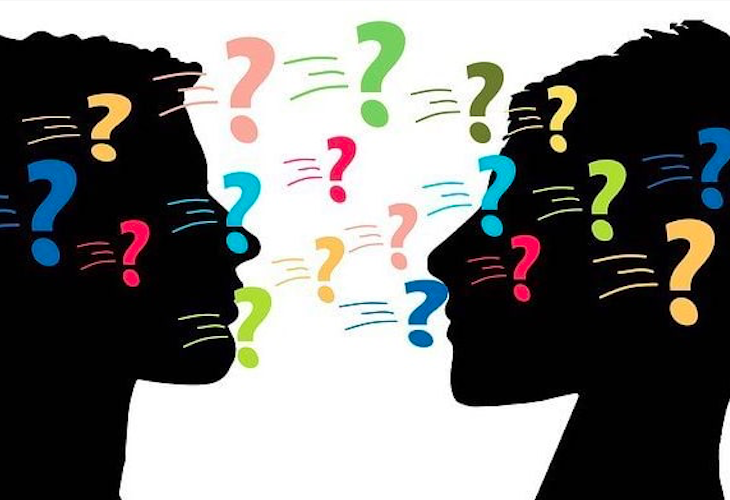

1 / 3
Handshakes are the standard, casual greeting. The grip tends to be lighter than the Western handshake and is also sustained for longer. In formal situations, people bow slightly or nod politely to greet one another formally.
2 / 3
As an extension of the need to maintain harmonious relations, the Chinese rely heavily on indirect communication. They rely less on words and are more attentive to posture, expression and tone of voice to draw meaning. Their speech is often ambiguous, and they may understate their point. The purpose of this is to maintain harmony throughout the conversation and prevent a loss of face on either end of the exchange.
3 / 3

Standard Chinese (known as ‘putonghua’ or Mandarin) is based on the Beijing dialect and is the official national language. Most people can read, write and speak Mandarin as it is taught in schools. Chinese is a tonal language, meaning that a single word may have multiple meanings depending on how it is pronounced. For example, the word ‘ma’ can mean "scold", "linen", "horse", or "mother" depending on the tone used by the speaker.
❮
❯
One common thing that Chinese people do is click their tongues when they want to show irritation, frustration, and annoyance. This is to help the people around them understand that something can be done to make them feel more comfortable.
The way Chinese people use hand gestures as a way to communicate to each other is something that is understood across all parts of China. They use it to give others information or let them know what is going on.